אותו ספר, כל המערכת.
שש המשטחים שעדיין לבושים בעור ה־Cool Stone הישן — בית, מחירון, חיפוש, קהילה, אודות וחשבון — עוברים ל־v2 הלבן-ירוק. אותם טוקנים (--gj-*), אותו app-shell, אותם watercolor masters. בלי קרם, בלי פלטה חדשה. team_100 בונה את ה־shell (Class A); כאן מעוצב התוכן של כל משטח שיושב בתוכו.
A pannable spec board, same conventions as the WP-CB-1 LOD300. Hebrew = production UI copy · English = design annotations. Each frame is the .sh shell wrapping real product UI only — no spec chrome inside. Frames carry data-screen-label.
§3.8 Reference patterns (Mobbin). Per team_00: each surface borrows a proven UX pattern (structure / layout / flow / interaction) from a named app — never its skin. Our tokens.css v2 (white-green · Carmela · Assistant / Frank Ruhl Libre · watercolor) is applied on top. If a pattern conflicts with the tokens, the tokens win. The pattern source for each surface is tagged in its header (▤ chip). RTL behaviour (nav · bottom-tab · forms · price/number direction) follows Wolt · Bit · Riseup.
ה־shell, סופית.
The definitive render of .sh wrapping a generic (non-crop-book) page, so the Class A build matches intent exactly. Header = logo + wordmark · primary nav (book·calc·market) · spacer · inline search · account button. Active state colours by surface: book = leaf · calc = sun · market = tomato. Mobile drops the inline nav for a 4-item bottom tab bar (.sh__nav--mobile). Refinement vs §24 as written: the search affordance is an inline field on desktop (not just an icon), and the account button keeps its avatar + label.
data-screen-label="shell/desktop"כותרת עמוד
אזור התוכן של משטח כללי. ה־shell עוטף כל עמוד במערכת — אותה כותרת, אותה ניווט, אותו פוטר.
data-screen-label="shell/mobile"כותרת עמוד
תוכן המשטח על מסך נייד.
.sh__nav a.is-active{.is-calc,.is-market}. No new tokens..sh__icon under 760px), so the Search surface (§3.4) is one keystroke away from anywhere./ Notion · Arc · Flighty launchers · Planta home
בית = רשת מודולים.
The landing surface, in reading order: the three open tools → an explainer band (where the project is now: open knowledge built on field experience + advanced-AI research) → an audience entry row (gardener / market-farmer / season-planner — each routes into the right view) → the advanced tools. Each tool card carries a watercolor hero, tier badge (open · beta · coming · paid · custom), one-line description and a stat. Coming-soon cards render disabled.
data-screen-label="hub/home"כלים פתוחים לחקלאות קטנה.
מערכת קהילתית לחקלאי שוק, גננים ולומדים — ידע אגרונומי, מחירון תוצרת ומחשבוני תכנון. פתוח, בלי הרשמה, בלי תשלום על הליבה.
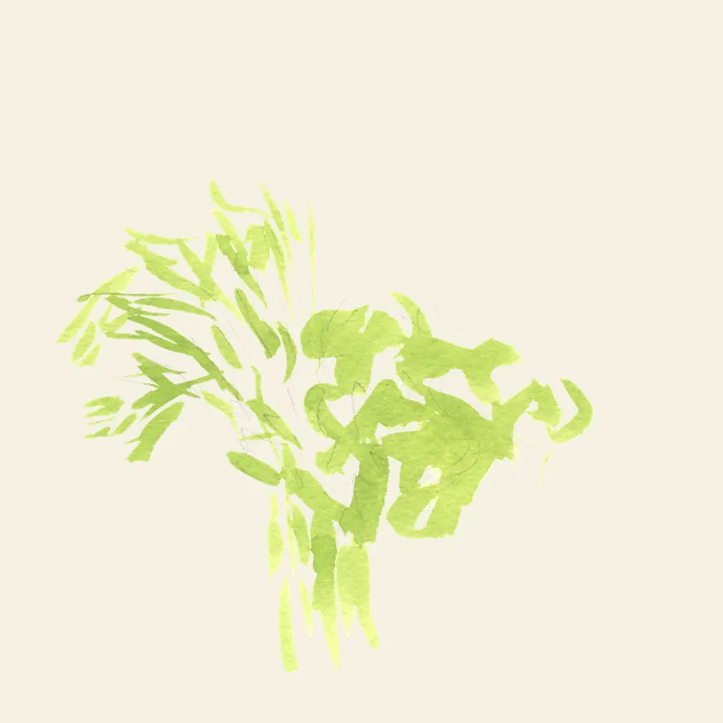
אינדקס פתוח של גידולים, זנים ומחזורי גידול — שלוש רמות עומק, שני קהלים.
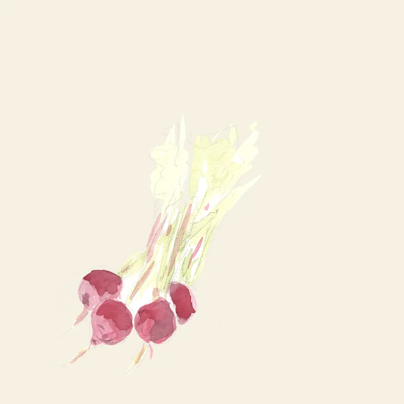
מדד מחירי תוצרת טרייה מהקהילה — ממוצעים מתגלגלים, מעודכן יומי.
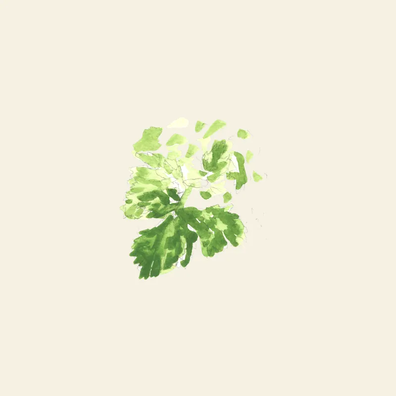
תכנון זרעים, תאריכי שתילה, יבול, הכנסה ורווח — מבוסס על נתוני הספר.
ידע פתוח, בנוי מהשטח.
הליבה כולה פתוחה ובחינם — נבנית על ניסיון מהשדה לצד מחקר בכלי AI מתקדמים, ומשתפרת עם כל תרומה מהקהילה.
תצוגת כרטיסים ויזואלית, גידול-אחר-גידול, עם רמת עומק "פשוט".
לספר · תצוגת כרטיסים › ▤טבלה צפופה וניתנת למיון + מחשבוני זרעים, יבול ורווחיות למטר ערוגה.
לספר · תצוגת טבלה › ∑ישר למחשבון — גידול, שטח ותאריך יעד, וכל הפלט במקום אחד.
למחשבון ›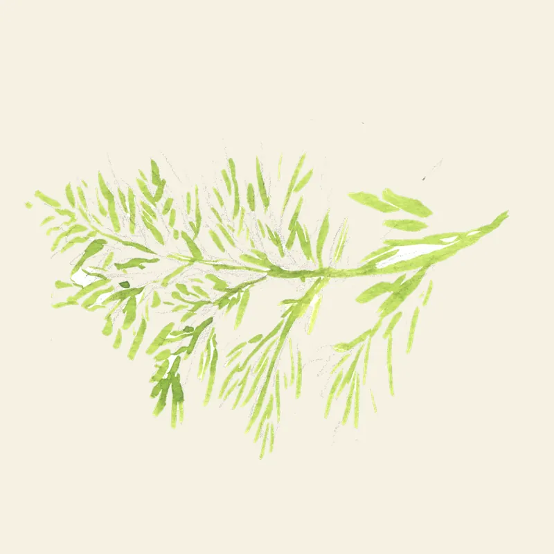
ערוגות, מחזור גידולים ולוח שתילה — נבנה על הפלטים מהמחשבון.
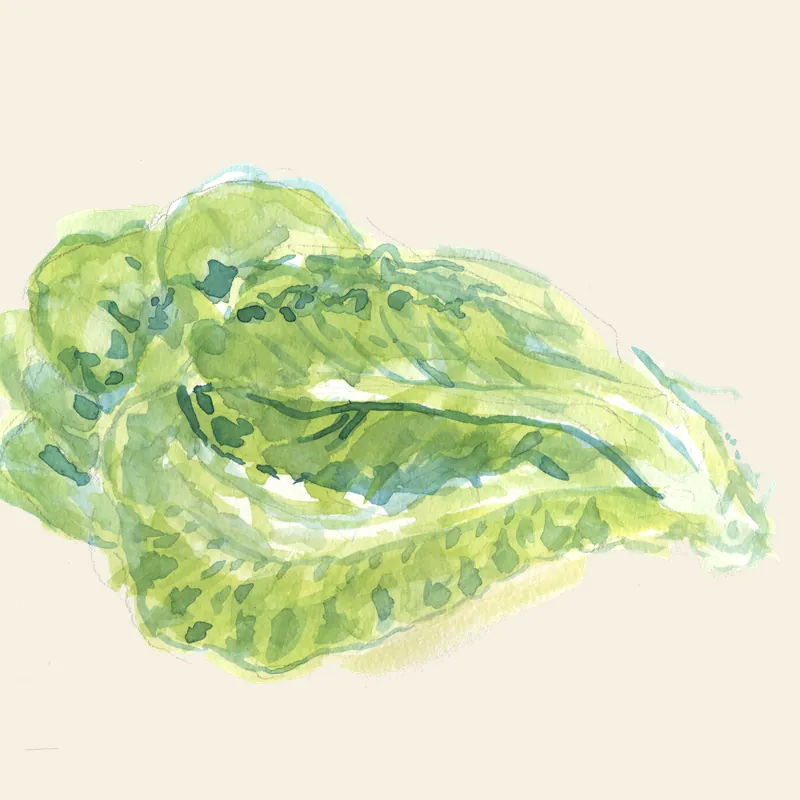
מנויי סלי תוצרת, חיובים ותקשורת עם הלקוחות שלכם.
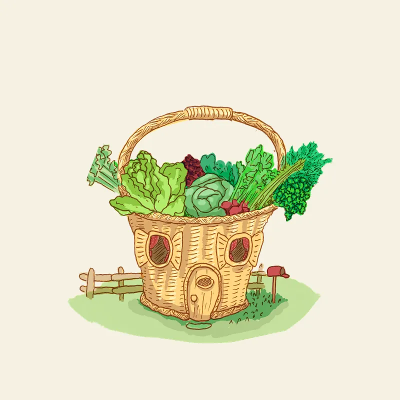
קצירה, אובדנים ומלאי בקירור — מהשדה עד המכירה.
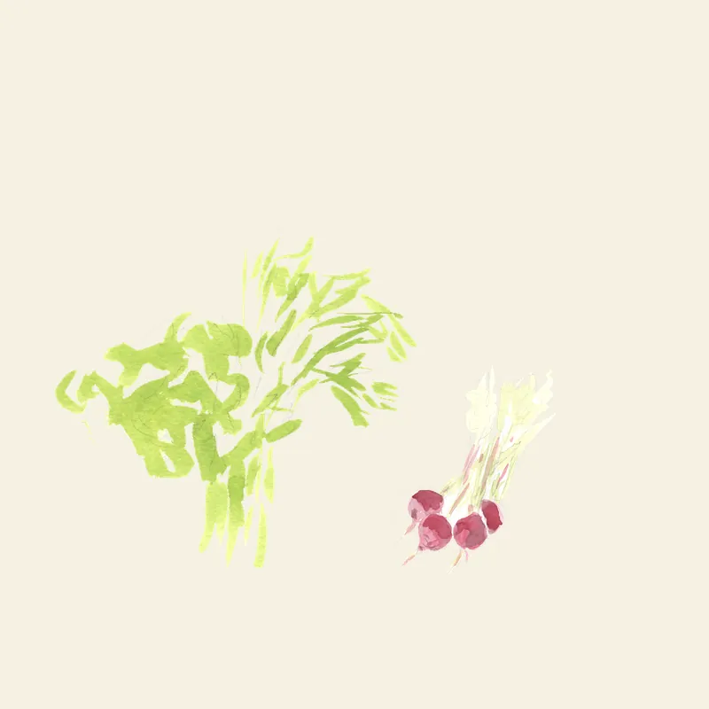
תיעוד מזג אוויר, מחלות וטיפולים — מותאם לחלקות שלכם.
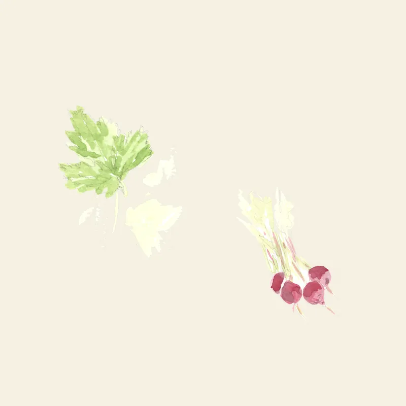
סנכרון חשבוניות והכנסות עם חשבונית-ירוקה ומערכות חיצוניות.
data-screen-label="hub/home·mobile"כלים פתוחים
ידע, מחירון וכלי תכנון לחקלאות קטנה.
.tier--* verbatim — open leaf · beta sun · coming paper · paid soil · custom tomato..modtile--row drops the tile to ≈⅓ height: small square hero on the side, title + one line beside it — a scannable list, not a stack of billboards./market/ Copilot Money · Delta · Blinkit/Zepto
מחירון — מדד פתוח.
The OrganicMarketAgent community price index. The mandatory disclaimer (its 4 bullets: מה · מאיפה · למה · לא) sits above the results and is never suppressed. A cards ⇄ table density toggle (the same .aud switch the book uses) lets farmers scan a dense, sortable table or browse price cards. Cards show product · current price · range · #sources · a freshness pill (fresh / aging / stale) + a CSS sparkline. Empty + stale states are first-class — the live data is currently sparse, so the grid must read gracefully when a product has 0 recent reports.
data-screen-label="market/"מחירון תוצרת
ממוצעים מתגלגלים של מחירי תוצרת חקלאית טרייה — 7 ימים אחרונים, מהקהילה.
- מה: ממוצעים מתגלגלים של מחירי תוצרת חקלאית טרייה — 7 ימים אחרונים.
- מאיפה: סוכני סריקה ציבוריים של mezoo + תרומות חקלאים. מצרפי, אנונימי.
- למה: כלי שיווקי קהילתי. הוכחה שאפשר ידע פתוח גם בשוק החקלאי הקטן.
- למה לא: לא הצעה מסחרית, לא קביעת מחיר, לא חוות-דעת. אינדיקטיבי בלבד.
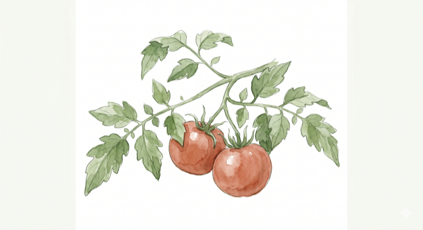

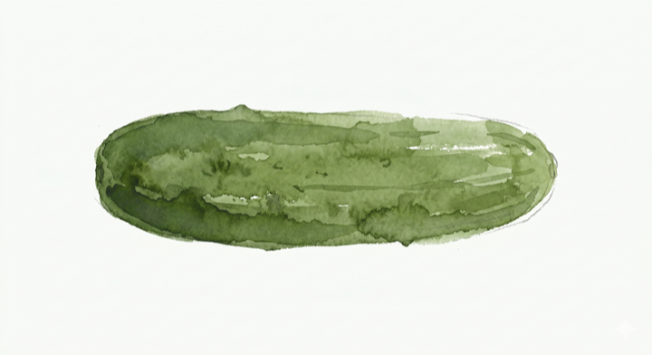
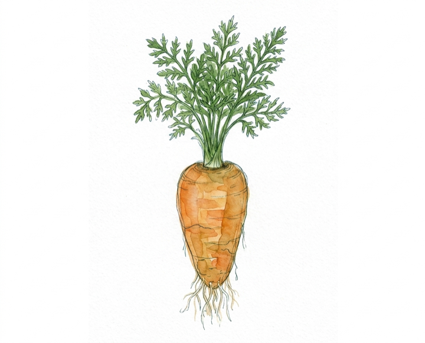
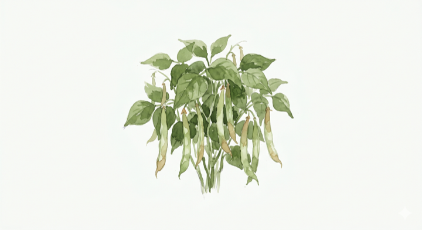
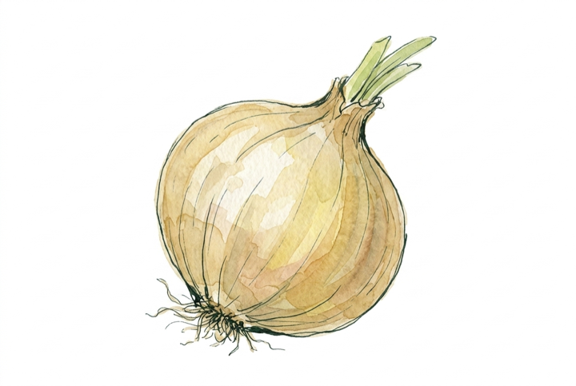
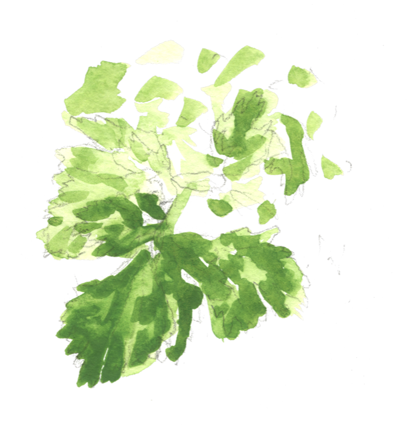
.aud density switch from the book (§2.1) — cards for browsing, a sortable .ptable for scanning. Same data, two layouts..fresh--fresh/aging/stale maps to the existing status tokens (leaf/sun/tomato). The pill + the sparkline's last bar both telegraph age..fchip single-select; price uses tomato (market/attention world)./market/{slug} Copilot Money · Delta
מוצר אחד, כל ההיסטוריה.
Detail = a 14-day price graph (data viz, tomato line + area) · big current price · price-history table (with day-over-day delta) · stat strip · source breakdown (reuses the book's .prov hierarchy) · the compact disclaimer · and a cross-link back to the crop in the book. When history is empty, the table swaps for the empty box (annotated).
data-screen-label="market/onion-dry"מגמת מחיר
▼ 4%7 ימיםהיסטוריית מחיר last reports · day-over-day
| תאריך | מחיר | שינוי | מקור |
|---|---|---|---|
| 24 מאי | 4.20 ₪ | ▼ 4% | סריקה · שוק כרמל |
| 22 מאי | 4.35 ₪ | ▲ 2% | תרומת חקלאי |
| 19 מאי | 4.25 ₪ | ▼ 6% | סריקה · רמי לוי |
| 15 מאי | 4.55 ₪ | — | תרומת חקלאי |
היסטוריה דלילה — רק 4 דיווחים ב־14 ימים. ככל שיותר חקלאים תורמים, המדד מדויק יותר.
פירוט מקורות contributing sources
- ממוצע קהילתי, לא קביעת מחיר.
- לא הצעה מסחרית ולא חוות-דעת.
.prov. Same source-hierarchy component as the book's drill-down — EX (farmer donations) wins, WR (public scan) carries lower weight. One system, two surfaces..xlink bridges market↔book (the book's crop page already links out to market). Closes the loop between price and agronomy..emptybox ("אין נתוני היסטוריה זמינים עבור 28 הימים האחרונים") — shown sparse here on purpose./search?q= Planta · NYT Cooking
חיפוש אחד, כל המקורות.
Unified results across crops (book) + products (market), grouped by source with a query echo and per-group counts. Result rows carry the watercolor swatch, name, and the right meta for their world (book → DTM/family; market → price/freshness). Matched substring is highlighted. A clean no-match state routes the user to the request CTA.
data-screen-label="search?q=עגבני"נמצאו 3 תוצאות עבור "עגבני" — בספר הגידולים ובמחירון.
data-screen-label="search?q=…·empty"אין תוצאות
לא מצאנו "זוקיני קוואטרו" בספר או במחירון.
אולי תרצו לבקש שנוסיף אותו?
<mark> highlights the matched substring (sun wash)./community Strava/Duolingo lightness · suggestion CTA
קהילה — תרומה ושיתוף.
Reframed per client: not a managed community surface — no activity feed, nothing to "moderate." Just two things: a manifesto explaining SFA is first and foremost an open contribution to the gardening + farming community (built on field experience + advanced-AI research), and a low-friction request/suggest form. The tone is communal & collaborative; the posture is "we offer collaborations & ideas, we don't run an internal community." The form chips post to the same /api/v1/contribute as the book's request-info CTA.
data-screen-label="community"קודם כל — תרומה לקהילה.
SFA היא קודם כל תרומה לקהילה המגננת והחקלאית: ידע פתוח, בלי הרשמה ובלי תשלום על הליבה. הכלים נבנים על ניסיון מהשטח לצד מחקר בכלי AI מתקדמים, ומשתפרים עם כל הערה שמגיעה מהשדה.
אנחנו מציעים שיתופי פעולה, רעיונות ויוזמות — לא מנהלים קהילה פנימית, אבל הטון תמיד שיתופי ופתוח. יש לכם בקשה, הצעה או רעיון לשיתוף פעולה? כתבו לנו.
בקשות והצעות
חסר גידול בספר? מחיר לא מעודכן? רעיון לכלי או הצעה לשיתוף פעולה? כתבו — נקלט ישירות אצלנו.
מעדיפים לדבר? דברו איתנו בוואטסאפ ›
POST /api/v1/contribute. Collaboration / idea is just another chip./about Notion · Linear pricing
חמש שכבות.
The 5-tier explainer — open · beta · coming · paid · custom — each with its badge, a plain-language description, and example modules. Same .tier--* badge colours as the hub cards, so a user who saw a badge on a tile learns what it means here.
data-screen-label="about"איך SFA בנוי
חמש שכבות של כלים — מהקהילתי הפתוח, דרך הניסיוני, ועד לבדיוק-בשבילך. כל מודול נושא תג שמסמן באיזו שכבה הוא נמצא.
פתוח
נתונים ציבוריים פתוחים — בלי הרשמה, בלי תשלום. תרומה לקהילה החקלאית. הליבה של SFA.
ניסיוני
פתוח לשימוש אבל עדיין בפיתוח. ייתכנו שינויים, מוזמנים לתת פידבק שמעצב את הכלי.
בקרוב
אנחנו עובדים על זה. השאירו פרטים בקהילה כדי לקבל הודעה כשנפתח.
בתשלום
כלים עסקיים מורחבים לחוות פעילות — תמחור לפי גודל ושימוש. תומכים בפיתוח הליבה הפתוחה.
מותאם
אינטגרציות וכלים מותאמים אישית — דברו איתנו, נתפור עבורכם פתרון לחווה שלכם.
.tier--* chips appear on hub tiles, search rows and here — learned once, recognised everywhere./account · nav hook Wolt · Planta settings
החשבון — לא מבוי סתום.
A v2 landing for the 4th nav item so it isn't a dead end: a login/profile shell + a friendly empty state explaining the core is open and accounts are optional (for the future paid/custom modules). Full account flows are a later module.
data-screen-label="account"ספר הגידולים, המחירון והמחשבון עובדים בלי הרשמה. חשבון נדרש רק לכלים המתקדמים (לקוחות · מלאי) ולשמירת תכניות.
כניסה לחשבון
היכנסו כדי לשמור תכניות, לנהל מודולים מתקדמים ולסנכרן בין מכשירים.
data-screen-label="account/profile"